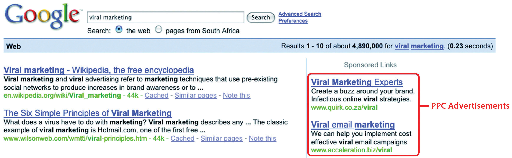
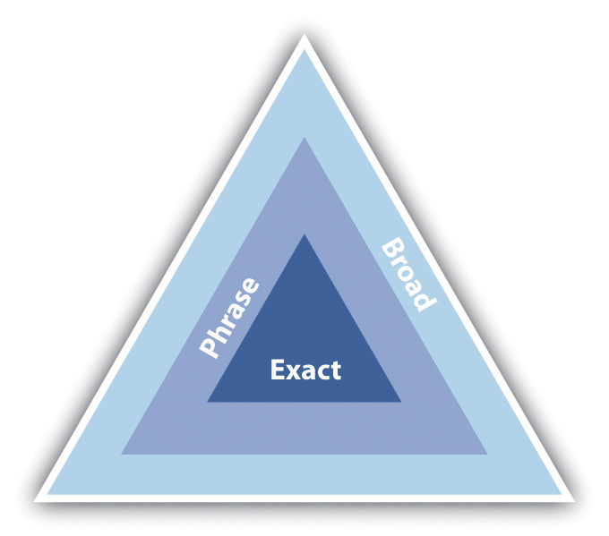
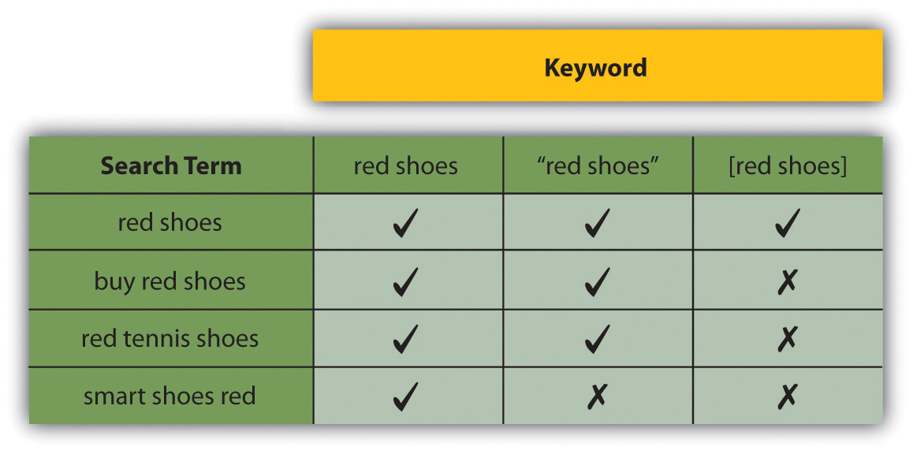
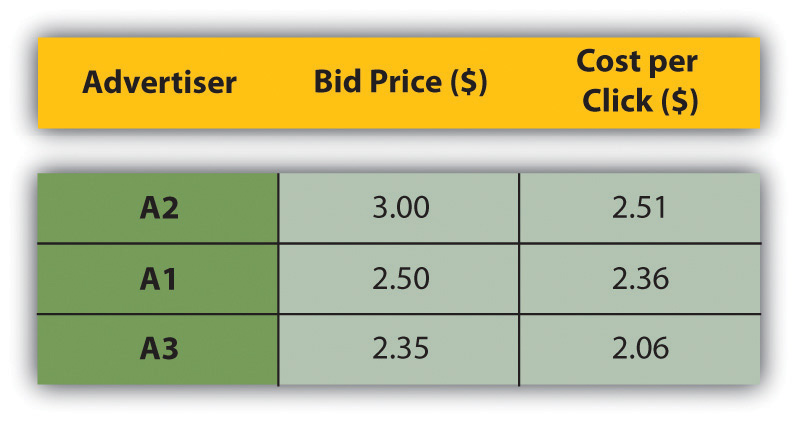
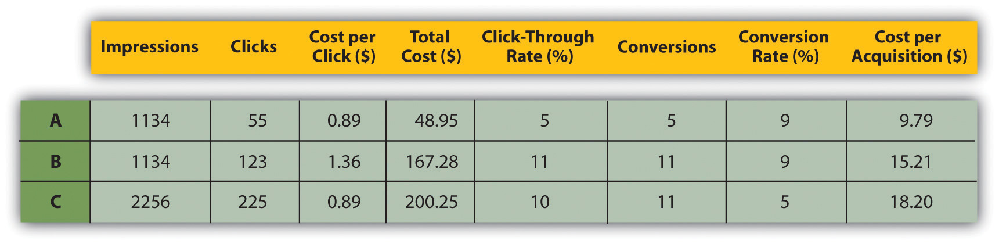
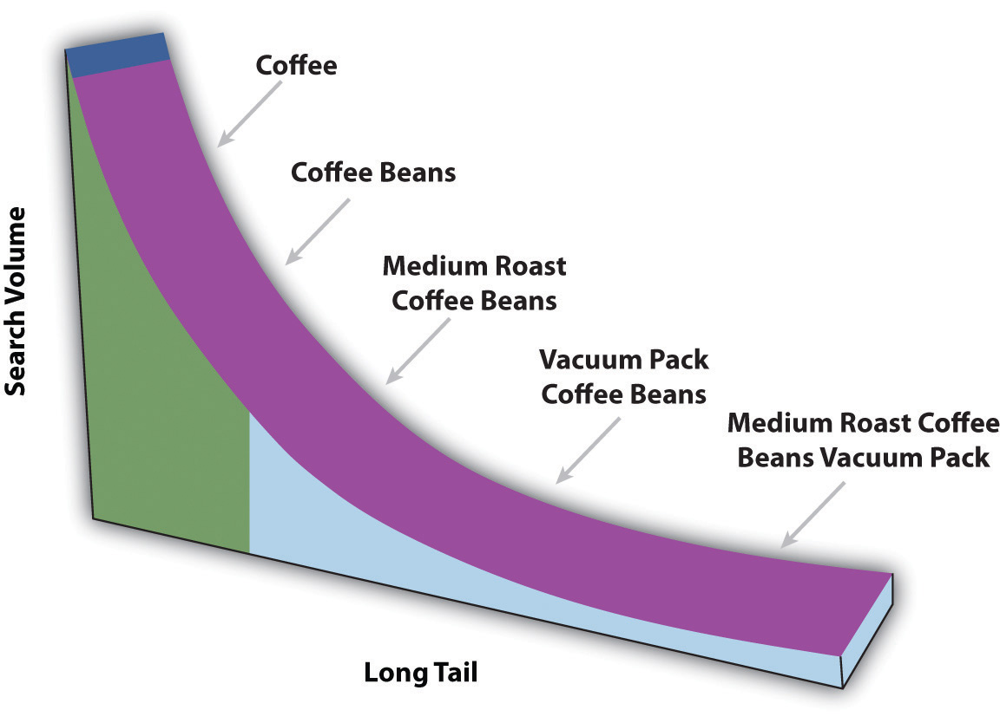
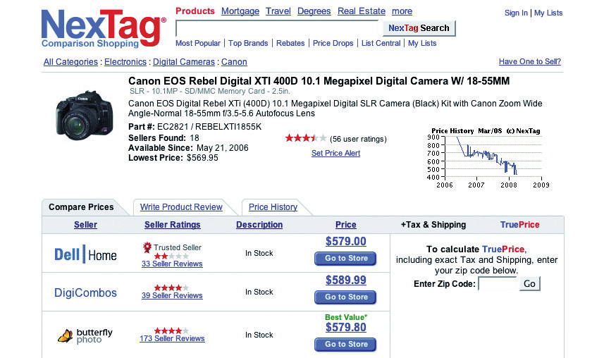
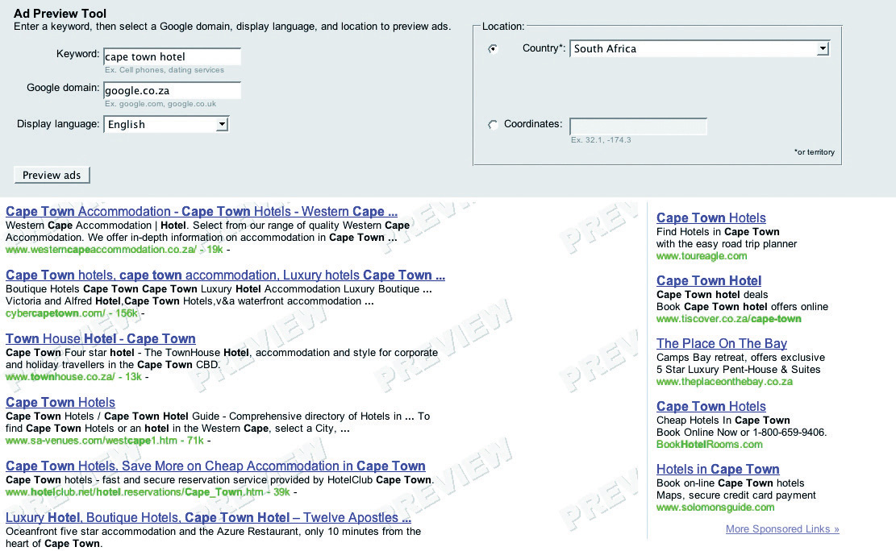

Pay-per-click (PPC) advertising is an advertising system where the advertisers pay only for each click on their advertisements.
While it is most often used as an advertising system offered by search engines, such as Yahoo! and Google, it can also be used for banner advertising (where the advertiser pays for clicks on the advertisement as opposed to impressions). PPC is also the system on which many shopping engines and directories, such as NexTag and Shopping.com, are based. Sometimes PPC advertising on search engines is referred to as paid search.
PPC advertising revolutionized the online advertising industry, and today, advertising generates 97 percent of Google’s revenue. Google’s revenue for the quarter ending March 31, 2008, was $5.19 billion, and that figure continues to increase.Rob Hof, “Google Defies the Naysayers,” Bloomberg BusinessWeek, April 17, 2008, http://www.businessweek.com/the_thread/techbeat/archives/2008/04/google.html?campaign_id=rss_blog_techbeat (accessed June 18, 2010).
In this chapter, we’ll use PPC to refer to paid-search advertising, that is, PPC advertising provided by search engines, but we will touch briefly on other advertising systems based on PPC.
PPC advertisements on search engines are easy to spot—they’re the results listed as “sponsored links.” They can appear on the top of the results page, usually in a box, and also on the right-hand side of the results page.
Figure 7.1 The Location of PPC Advertisements
PPC advertising is keyword based—this means that it is based on the search term that a user enters into a search engine. A search term can have one word or be made up of many words. Sometimes a multiword search term is referred to as a “key phraseA multiword keyword.” or “keyword phrase.” Advertisers target those keywords for which they want their advertisement to appear.
For the advertiser, the beauty of PPC advertising on search engines is that their advertisements are displayed when potential customers are already expressing intent—they are searching for a product or service. It allows advertisers to present their offering to a potential customer who is already in the buying cycle.
You have learned that search engines display results to search queries based on proprietary algorithms. Each major search engine uses its own formula to determine what results to display for any term. All of this is available to Web users for free! With about 80 percent of Web users using search engines as a starting point,Bernard Jansen and Paulo Molino, “The Effectiveness of Web Search Engines for Retrieving Relevant Ecommerce Links,” Information Processing and Management 42 (2006): 1077, http://ist.psu.edu/faculty_pages/jjansen/academic/pubs/jansen_ecommerce_ipm2006.pdf (accessed April 3, 2008). that’s a lot of traffic going through search engines each day. So search engines require a way of generating revenue from all that traffic.
In 1996, the Open Text Index search engine began allowing Web sites to pay for a preferred ranking in selected results pages, to mixed response from business owners and other search engines. However, this was pay for placement, not that different from paid inclusion, where advertisers were paying to appear in the search results, whether or not a user clicked through to their site.
In February 1998, GoTo.com was launched. This was a new search engine that allowed Web site owners to bid for placement in the search results pages for specific search terms. Results were ranked according to how much the Web site owners were willing to bid, with the highest bid appearing at the top of the page. The Web site owner would only pay for each click, as opposed to for appearing on the results page. By July 1998, advertisers were paying up to a dollar for each click! GoTo.com changed its name to Overture Services, Inc., in 2001, and was acquired by Yahoo! in 2003. GoTo.com partnered with the portals Yahoo! and MSN to monetize their search queries.
Overture successfully patented their PPC mechanism for search engines (“system and method for influencing a position on a search result list generated by a computer network search engine” was patented in 2001) and has since then pursued, successfully, lawsuits against other PPC providers, including Google.Danny Sullivan, “Overture Files Lawsuit against Google,” Search Engine Watch, May 6, 2002, http://searchenginewatch.com/2164761 (accessed June 18, 2010). Overture initiated infringement proceedings under this patent in 2002 and settled with Google after it had been acquired by Yahoo! Google agreed to issue 2.7 million shares of common stock to Yahoo! in exchange for a perpetual license.
Google started search engine advertising in December 1999 and launched AdWords in October 2000. AdWords allowed advertisers to place keyword-targeted listings but charged advertisers on a CPM (cost per mille) basis. Google launched PPC advertising in February 2002, and today, advertising accounts for about 99 percent of Google’s revenue.
Each of the three major search engines (Google, Yahoo! and MSN Bing) has its own pay-per-click (PPC) advertisingBidding for sponsored advertisements on search engine results pages and paying only when the advertisement is clicked on. platform, namely, AdWordsGoogle’s PPC (pay-per-click) advertising system., Yahoo! Search MarketingYahoo!’s PPC (pay-per-click) advertising, powered by the Panama platform., and adCenterMicrosoft’s PPC (pay-per-click) advertising system.. While the basic process remains the same for each one, there are some differences.
With PPC advertising, the advertiser does the following:
The search engine algorithm does the following:
Advertisers can choose to have their advertisements displayed on the search network only (which means on search engines), or they can select to have the advertisements displayed on the content network.
The search network will include the search engine that owns the platform (so Google for AdWords), as well as other search engines for which that platform provides paid results (e.g., currently Ask.com uses the AdWords platform for paid results).
Figure 7.2 Suppliers and Search Engines as of 2007“Search Engine Results Chart,” Search Engine Watch, March 23, 2007, http://searchenginewatch.com/2167981 (accessed June 18, 2010).

The content network refers to Web sites other than search engines that also display PPC advertisements. For Google AdWords, these are the Web sites and blogs that have joined Google AdSense, Google’s publishers’ platform. Google determines the content of the Web site and then displays appropriate PPC advertisements. Typically, the CPC (cost per click)Paid when a link is clicked upon. for text ads is lower than on the search network, but the CTR and conversion ratePercentage of actions divided by click. can be much lower. The Google content network also allows image, video, and mobile ads.
Figure 7.3

The site below is running AdSense. Notice how the advertisements correlate to the content of the article.
Why do you think the CTR and conversion rate are lower on content PPC advertisements as opposed to search PPC advertisements?
Text PPC advertisements follow the same basic structure:
Heading
Two lines of advertisement copy,
Which can be displayed on one line
www.DisplayURL.com
The URL (uniform resource locator) shown is not necessarily the URL that the user will click through to. When writing the copy, these are known as the display URL (what is shown on the advertisement) and the destination URL (what the actual URL of the page is). The display URL is sometimes also called a vanity URL. The aim should be to send users to a Web page as specific to their search, and the PPC advertisement, as possible. This is known as deep linkingMaking a hyperlink that points to a specific page or image on another Web site instead of that Web site’s main or home page..
What is the function of the display URL? Do you think that this is misleading to a searcher? Why do you think the display and the destination URL are different?
The display URL must be the same domain as the destination URL. Google will only show one advertisement per display URL. So an advertisement might look like this:
Roses for Valentine’s
A dozen red roses for your love;
Fast, free delivery in RSA.
www.flowers.co.za/roses
The search engines limit the characters in each line. There are also restrictions on what you are allowed to write in an advertisement. Here are some of the editorial guidelines from Google AdWords:
We’ll take a look at keyword selection when we go through the process of setting up a campaign, but first you need to know a little bit more about the different ways we can define keywords in a PPC (pay-per-click) campaign.
Each search engine requires the advertiser to enter the keywords for which their advertisement should appear. This list of keywords determines the search queries for which the advertisements could appear.
On http://www.google.com in the United States, there were approximately 235 million searches performed each day,Wendy Tanaka, “Google Hits Double Digits,” Forbes, September 5, 2008, http://www.forbes.com/2008/09/04/google-tenth-anniversary-tech-enterprise-cx_wt_0905google.html (accessed June 18, 2010). and Google estimates that nearly 50 percent of all searches are unique.Patricia Hursh, “Marketing in the Search Tail: Is the Pain Worth the Gain?” Search Engine Watch, January 24, 2006, http://searchenginewatch.com/3579396 (accessed June 18, 2010). It would be a tough, if not impossible, task to determine all the possible terms potential customers might use to find you. That is why there are different keyword match types for PPC advertising.
Google AdWords uses the following match types:
Figure 7.4
Depending on the match type, your advertisement can appear for more or fewer keywords.
Broad match means that your advertisement will appear for the keywords you have entered, as well as search termsAnother way of saying search query. that contain your keywords and any other words in any order, as well as some variations of your keywords (misspellings and synonyms).
Say you have chosen the following keywords, and this is set to broad match:
Your advertisement could appear for all the following searches:
Phrase match, which is denoted with quotation marks around the keywords (“phrase match”) means that your advertisement will appear only for search terms that have your keywords in them, in the same order, though other words may also be in the search term.
If you changed the same keywords to phrase match, they would look like the following:
Your advertisement would appear for the following:
But your advertisement would not appear for the following:
Exact match, denoted by square brackets ([exact match]), means that the advertisement will only appear for search terms exactly the same as the keywords selected.
Now change the keyword to exact match:
Your advertisement will appear for searches for the following:
It would not appear for any other searches.
Figure 7.5 Match Types for Certain Search Terms
Negative match, denoted by using a dash in front of the keywords (-negative), means that your advertisement will not appear in searches using that word, no matter what other words are used.
Use the broad match example, and include a negative match:
Your advertisement would appear for the following:
Your advertisement would not appear for the following:
Advertisers can assign as many keywords as they wish to an advertisement, but only one advertisement for each URL (uniform resource locator) will be shown. If two advertisers are bidding to show advertisements for the same domain, only one will be shown. Which advertisement will be shown is based on the bids being placed and on the quality of the advertisements.
You are able to target your campaigns, so you know that the trafficThis refers to the visitors that visit a Web site. you are getting is relevant to your product. This is known as geotargeting.
You can choose the language of the search engine and the location. For example, you might only want your advertisement to show to English searches in Asia, or to English searches in London. Targeting your advertisement means that you won’t pay for traffic you don’t want.
Advertisers need to determine the maximum they are willing to pay for a click on their advertisement, and they need to decide this for each keyword they enter for an advertisement. This bid is the maximum CPC (cost per click), or max CPC, that the advertiser is willing to pay for the click.
A Vickrey auction is an auction where bidders do not know what bids others have placed. It is a sealed auction. The Vickrey-Clarke-Groves mechanism is the generalization of the Vickrey auction that holds that bidders will bid truthfully. In PPC advertising, this is not always the case. Bidders sometimes bid to push prices for their competition instead of to maximize their own revenue.
However, this will not necessarily be the CPC that the advertiser must pay for a click. Every time a search query is entered, the search engine runs an auction to determine the placement of the advertisements where advertisers have bid on that search term. This auction is known as a generalized second price (GSP)Auction type that search engines are modeled after. auction, which is a variation on the Vickrey auction.
In the GSP auction, each advertiser will pay the bid of the advertiser below him, plus a standard increment (typically $0.01), for a click on the advertisement.
Say three advertisers, A1, A2, and A3, bid $2.50, $3.00, and $2.35, respectively, on the same keyword. The search engine has set a minimum price of $2.05 on that same keyword. Figure 7.6 "Example of Advertisers Bidding on the Same Keyword" shows how the advertisements would be positioned and what they would each pay for a click.
Figure 7.6 Example of Advertisers Bidding on the Same Keyword
When it comes to rankingProcess by which search engines display Web sites so that the most relevant Web sites appear on the top. Search engine optimization is a technique by which high rankings may be obtained., of course, it’s not quite as simplistic as that. As well as the bid an advertiser places on a keyword, the search engine will take a number of other factors into account. In the case of Google AdWords, this is known as Quality ScoreGoogle’s basis for determining the minimum bids for keywords, based on relevancy and historical data..
The Quality Score is determined by the following, among other factors:
Search engines look at factors such as relevancy to try to ensure that it is not just having deep pockets that can land advertisers the top spot. Search engines need to ensure that users find the advertisements relevant, otherwise they’ll be less likely to click on them—and no click means no revenue for the search engine.
Figure 7.7 A Heat Map from Eyetools.com That Shows Where Users Look on a Search Engine Results Page (SERP)

Source: Heatmap generated by Eyetools, Inc.
Studies repeatedly show that those advertisements nearer the top of the page (so the best ranked) attract the highest CTRs (click-through rates). They get the most clicks. And the clicks cost the advertisers more.
Looking at the heat map, you can see that getting in the blue box on Google will most likely generate even more clicks on an advertisement. You might think the more clicks the better, but is this necessarily the case?
Being in the top position means you will pay more per click. Many clicks at a higher price may use up your budget quickly. Also, many people click on the top advertisement believing it to be the top organic search result—often without reading the advertisement text.
Advertisers need to consider what a user does after clicking through to the advertiser’s Web site from the search engine. When planning a PPC campaign, it is therefore crucial to set up the goals of the campaign and make sure that these are being met. You can use your analytics package to set these up. With a goal set up, the advertiser can track how many of the users that click throughA click on a link that leads to another Web site. to the Web site follow through to that goal. This is called a conversion.
Goals can be any of the following:
We know that the CTR of an advertisement is the percentage of clicks divided by impressionEach time the advertisement is shown..
The conversion rate of an advertisement is the percentage of conversions divided by click.
As the advertiser, you also need to know the value of each conversion. You need to know this so that you don’t pay too much for your clicks, and so that you bid to have the best CTR for maximum return on investment (ROI)The ratio of cost to profit (e.g., advertising spending as a percentage of the revenue that it generates)..
Figure 7.8 How to Adjust Bidding Strategies Based on Business Principles
Figure 7.8 "How to Adjust Bidding Strategies Based on Business Principles" shows how you might adjust bidding strategies based on business principles such as the following:
The campaign needs to be run according to business rules. A PPC campaign can aim for maximum conversions, but this is usually at a higher CPA.
As well as deciding on your CPC bids for your keywords, you are able to determine the budgets for your campaign. You can set daily budgets, monthly budgets, or no budget. Once your budget is reached, your advertisements are paused, so you can be sure that you never overspend. If you are concerned about overspending, you can set a daily budget. However, this can mean that your advertisements do not run as often as you would wish them to.
The different advertising platforms offer advanced bidding options, all aimed at helping you to run your advertising campaign better. You can bid for placement on the search engine results page (SERP)The actual results returned to the user based on their search query., or you can bid based on how much you are willing to pay for a click. You are able to bid for advertisements during certain times of the day only, called scheduling.
Scheduling allows the advertiser to show their advertisements only at certain times of the day. For example, an advertiser might want to time their advertisements to show at the usual time for lunch breaks.
There is some theory that different platforms are better for different industries. For example, some believe that Yahoo! fares better than Google on travel advertising. However, this is subjective, and most large advertisers will run PPC campaigns on a number of platforms. As with most things in eMarketing, it is all about testing.
There are some small differences with each platform in terms of editorial policy, and each system has a different user interface. Google AdWords, perhaps the most well known, allows users to transact in the currency of their choice and also offers training programs and certifications.
Google AdWords also currently has the best geotargeting worldwide, although geotargeting is offered by both Microsoft adCenter and Yahoo! Search Marketing.
Google has estimated that 50 percent of searches are unique. This means that the sum of unique searches is about the same as the sum of nonunique searches. Looking a little more closely at search terms will show a small number of high-volume searches, and then a large number of lower volume searches stretching out to those unique searches.
Figure 7.9
In the long tail, the sum of the low-volume searches matches the high-volume searches.
This is sometimes referred to as the long tail of search. Figuring out those low-volume, niche search terms can do wonders for a PPC campaign. Generally there is not much competition for those search terms, and the search term itself is very targeted.
AdWords offers an AdWords Starter Edition—sign up for an account to see how it works! You can sign up from http://adwords.google.com. Just choose “Starter edition” after you click to sign up.
Google uses the following match types:
The Quality Score is determined by four main factors:
For a successful campaign, you need a full online and an offline analysis of the business, customer demographics, the industry, and competitors. While it is relatively quick to set up a campaign, preplanning will show dividends later. You need a brand, an identity, and a clear, unique selling point. You only get three lines to advertise, so you need to make sure you know what should be in there.
You need to know what you want to achieve with your PPC (pay-per-click) campaign. Branding campaigns, for example, are very different from campaigns that increase sales. What do you want users to do once they click on your advertisement?
Determine how much you are willing to spend to achieve your goal—your target cost per action (CPA). Decide how much budget you are going to allocate to your PPC campaign. If your goal is to increase revenue, your budget might be unlimited so long as revenue is increasing and you are within your target CPA.
You need to determine what keywords potential customers are likely to use when searching for the service that you offer. Along with that, you need to know the following:
As part of your keyword research, you need to look at expected volumes for your keywords, so you know how to bid on keywords. See “Tools of the Trade” in Section 7.5 "Online Comparison Engines" for some suggestions.
There are also tools that will show you similar or related keywords, so you can expand your keyword list even further. Again, find suggestions in “Tools of the Trade” in Section 7.5 "Online Comparison Engines".
Using your keyword research, write compelling advertisements to promote your products. Advertisements can be unique to a keyword, or you can group them and have a number of keywords for one advertisement.
Make sure you use an appropriate display URL (uniform resource locator) and that you target the landing page for each advertisement. Always include a call to action.
Based on your goals and keyword research, set the maximum bids for your keywords. Don’t set these too high at this stage—you’ll tweak the bids as you test your campaign.
With conversion tracking in place, you can analyze your ROI (return on investment) down to a keyword level, and then focus on those keywords that are converting best. Consider seeing how changing the text of your advertisement can increase the CTR (click-through rate) or perhaps better your conversion rate. Test different landing pages to see what converts better.
PPC advertising is not just about creating advertisements and bidding for keywords. The process continues once a user has clicked on your advertisement. The page that the user reaches by clicking on an advertisement is called a landing page.
Landing pages can make or break an advertising campaign. Poorly executed PPC campaigns will send all users to the home page of a Web site. Campaigns that convert will make sure that users land on a page that is relevant to their search. The aim is to keep the user as focused on the goal—conversion—as possible. Sending the user to the home page gives him too many other options to choose from.
For example, if someone searched for “Canon EOS 450D,” a poorly run campaign would send that user to http://www.canon.co.uk. A better campaign would have the user clicking through to http://www.canon.co.uk/For_Home/Product_Finder/Cameras/Digital_SLR/EOS_450D/index.asp.
Landing pages also indicate relevance to the search engine, which can increase the Quality Score of the advertisement, and in turn lower the CPC (cost per click) of the keyword. Adding pages to the Web site that are keyword rich can also carry SEO (search engine optimization) benefits.
PPC campaigns often have thousands of keywords, which can mean that there will be a lot of landing pages to be built! Creating dynamic landing pagesUnique, keyword-rich landing pages that can be created for each search using a simple script. means that with a simple script, unique keyword-rich landing pages can be created for every search. The script will take the keyword that the searcher has used, and insert it in predefined places on the landing page. The user will then be landing on a page that is highly relevant to their search!
Dynamic landing pages can be created with a simple script that will allow for a landing page to be created for every keyword in the PPC campaign.
The bounce rate of the landing page also affects the Quality Score of an advertisement. See Chapter 15 "Web Analytics and Conversion Optimization" for more information.
As we mentioned, PPC (pay per click) does not only apply to search engine advertising. We have seen that advertisements can be placed on content sites. PPC can also refer to display advertising, where advertisers pay only for each click-through to their site, as opposed to each impression of the banner. PPC is also used by many online comparison engines.
You have probably come across online comparison engines when searching for a particular product. Popular comparison engines include the following:
These engines contract with retailers. The retailers supply the engine with a product feed (XML [extensible markup language]A standard used for creating structured documents. XML promises more efficient and organized delivery of data over the Internet. XHTML is the XML version of hypertext markup language (HTML). or CSV [comma-separated values]Used to send databases of information separated into specific column headings.) that contains the following information:
Figure 7.10
A shopping comparison engine will show offers from a number of retailers.
When a user searches for a product on one of the comparison engines, the engine will list all retailers who offer that product. When the engines contract the retailers, they also agree on how much the retailer is willing to pay for each click from the comparison engine through to the retailer’s Web site. The minimum CPC (cost per click) will vary from category to category (consumer electronics, for example, could have a higher CPC than baby clothes).
When results are shown, priority is given to those retailers who are willing to pay a higher CPC. However, the user has the option of sorting results by price, alphabetically, and so on.
Online comparison engines form an important part of the online marketing mix for an online retailer. As well as comparing products from different retailers, they also offer users the chance to review products as well as retailers. Many users prefer to start their product search on a comparison engine, as they can see a variety of prices for the same product in one place.
So what can you do to market your site more effectively through online comparison engines? You may try any of the following:
Optimize the product feed you supply:
Make sure your price is right:
The foundation of search marketing is keyword research, and there are a number of tools that will both aid you in growing your keyword list and in determining keyword volumes. Some are free and some require a fee. Many keyword volume tools have relied on OvertureFormerly GoTo.com, bought by Yahoo! and provider of Yahoo!’s PPC (pay-per-click) advertising. Panama has replaced Overture as the platform that powers Yahoo! Search Marketing., and as Yahoo! is no longer supporting this tool, the information is not necessarily accurate. All these tools should be used as guidelines only. Test the data with your own campaigns to determine what works best for you.
Figure 7.11 Google’s Ad Preview Tool
Keyword volume tools include the following:
Keyword suggestion tools include the following:
Google AdWords has an Ad Preview Tool, which allows you to see where your advertisement would appear on the page (without using the search engine and thus skewing data). This can be accessed at http://adwords.google.com/select/AdTargetingPreviewTool.
Some paid services that aid with keyword research are the following:
Spreadsheets, such as Microsoft’s Excel, are useful to aid you in building your keyword lists. Getting to grips with functions such as concatenation will be useful.
PPC (pay-per-click) campaigns are relatively quick to set up, can provide high volumes of traffic, and are by nature highly trackable—what’s not to love? But there are some pitfalls that you ought to be aware of.
Click fraud occurs when your advertisement is clicked on by someone who is not a legitimate potential customer. Because an advertiser has to pay for every click on his advertisement, sometimes unscrupulous competitors can click on the advertisement to force the payment. There are even automated bots that can click on advertisements, costing advertisers millions.
Google said in February 2007 that click fraud accounts for only 0.02 percent of clicks. You can read more on its blog: http://adwords.blogspot.com/2007/02/invalid-clicks-googles-overall-numbers.html.
The search engines, however, have taken measures to combat this. Advertisers can report suspected click fraud, and the search engines will refund invalid or fraudulent clicks after investigation.
What can you do? Keep an eye on your campaign. Any sudden leap in CTRs (click-through rates) should be investigated, and you should pay particular attention to see if the conversion rate drops (which would indicate potential fraud) or stays the same. Pause the campaign if you suspect fraud, and alert the search engine.
High-traffic keywords are expensive, and the battle to stay on top means that the CPC (cost per click) of these keywords is escalating. Convincing yourself that it’s number one or nothing can result in burning through your campaign budget quickly with nothing to show for it.
What can you do? Keep focused on your campaign goals and ROI (return on investment), and keep investigating to find the (cheaper) niche keywords that work for you.
PPC campaigns require a lot of monitoring, and the bigger your campaign gets, the more time this takes. PPC advertising can provide a fantastic ROI, but you need to check in and tweak regularly to make sure that it continues to perform for you.
What can you do? Make sure that you have allocated the time required to run a successful campaign. There are also tools available that make managing large campaigns easier. But remember the following good reasons (and many, many more) why PPC works for you:
While there are many advantages to PPC (pay per click), there are some things to be wary of:
Southern Sun (http://www.southernsun.com) launched a new Web site in May 2006. The changes included an updated look and feel, a greater quantity and quality of information, and better booking functionality. As often happens with a site relaunch, Southern Sun lost all the previously good organic search engine rankings. A new Web site needs time to climb up the search engine rankings, and it can take a minimum of three months before it starts receiving organic traffic. Southern Sun could potentially have lost out on bookings because of the decrease in organic traffic. Therefore, they required a way of ensuring that their site still did the following:
With the new site, Southern Sun hoped to increase the number of bookings made online and to tap into the international-tourist and business-travel market. This meant they needed to migrate a significant amount of their offline promotions and special offers to their Web site in such a way as to attract a favorable online response.
Quirk eMarketing, the online agency for Southern Sun, set up a PPC (pay-per-click) campaign with the following intentions:
Separate campaigns were built for the following:
Quirk did an extensive keyword research exercise to identify high-traffic-generating keywords in order to get as much traffic as possible, as well as niche long-tail keywords for better cost per conversion. Keywords specific to Southern Sun’s various customer groups were targeted, such as families, business travelers, couples, and tourists.
Furthermore, advertisements were set up that tested the best marketing message, that is, whether people responded best to the following:
As a result, Quirk could assess whether different groups of people were influenced by different advertisements, as keyword research had been done according to customer groups.
In order to determine whether people responded better to special offers and campaigns or just hotel and area details, landing-page split tests were conducted. Tracking for various different stages of the hotel-booking process was implemented, including the hotel room quote and the final thank-you-for-payment page so that it would become evident where any drop-offs occurred.
One of the great advantages of PPC is that it gets immediate results. As soon as the new site went live, so did the PPC campaign, which meant traffic from day one. The traffic generated by the PPC advertising ensured that the site was noticed by search engines and was trusted as a valid South African hotel site.
Split testing revealed some very interesting and useful behaviors and trends:
Running a PPC campaign when you launch or relaunch a site will do the following:
Andrew Ellam, “Overture and Google: Internet Pay per Click (PPC) Advertising Auctions,” London Business School, March 2003, http://www.kellogg.northwestern.edu/Faculty/ottaviani/homepage/Papers/Overture%20and%20Google.pdf (accessed June 23, 2010).
“Financial Release,” press release, Google, January 31, 2008, http://www.google.com/intl/en/press/pressrel/revenues_q407.html (accessed April 3, 2008).
“Google Announces Plan for Two-Year Expiration, but…,” Google Watch, July 16, 2007, http://www.google-watch.org/cgi-bin/cookie.htm (accessed April 3, 2008).
“Google Search’s Golden Triangle,” Eyetools, http://www.eyetools.com/inpage/research_google_eyetracking_heatmap.htm (accessed April 3, 2008).
“Search Engine Results Chart,” Search Engine Watch, March 23, 2007, http://searchenginewatch.com/2167981 (accessed June 18, 2010).
Danny Sullivan, “Searches per Day,” Search Engine Watch, April 20, 2006, http://searchenginewatch.com/2156461 (accessed June 18, 2010).
“Traffic History Graph for Google.com,” Alexa, April 3, 2008, http://www.alexa.com/data/details/traffic_details/google.com (accessed April 3, 2008).